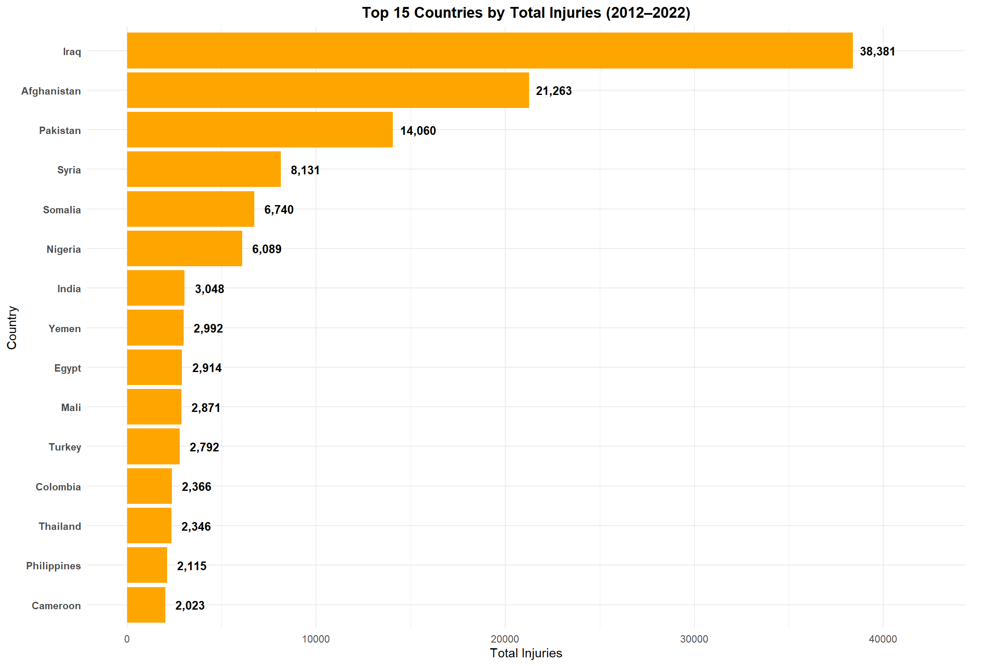
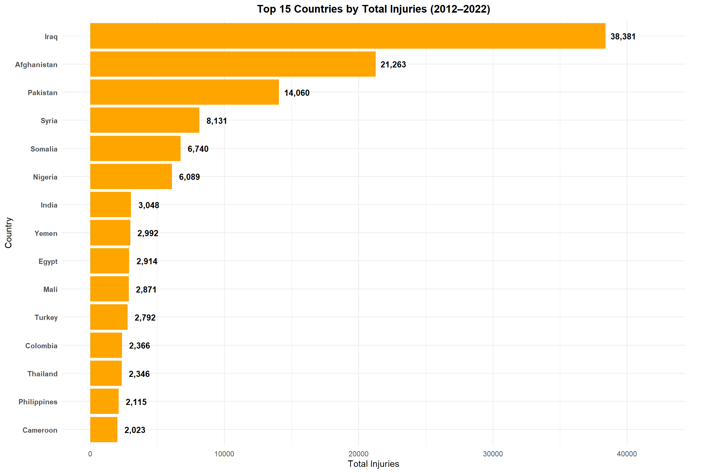

Top Impacted Countries

Insights:
- Afghanistan consistently had the highest GTI score throughout most of the period.
- Iraq shows a significant decline in terrorism impact since its peak around 2014-2015.
- Several countries show recent increases in their GTI scores, suggesting emerging terrorism hotspots.
- The overall pattern reveals fluctuating impacts, indicating the dynamic nature of terrorism threats globally.

 
